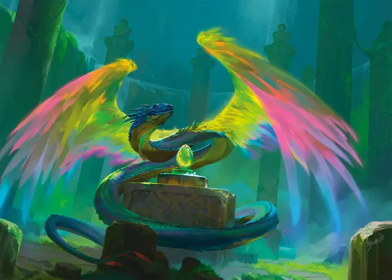

Коатль
Couatl
Средний Небожитель, Принципиальный Добрый

Класс Защиты 19 Инициатива +5 (15)
Хиты 60 (8к8 + 24)
Скорость 30 футов, Полёта 90 футов
| мод | спас | ||
|---|---|---|---|
| СИЛ | 16 | +3 | +3 |
| ЛОВ | 20 | +5 | +5 |
| ТЕЛ | 17 | +3 | +5 |
| мод | спас | ||
|---|---|---|---|
| ИНТ | 18 | +4 | +4 |
| МДР | 20 | +5 | +7 |
| ХАР | 18 | +4 | +4 |
Сопротивление урону Дробящий, Колющий, Рубящий
Иммунитеты Излучение, Психический
Чувства пассивное Восприятие 15, Истинное зрение 120 футов
Языки Все, Телепатия 120 фт.
Опасность 4 (1 100 опыта; БВ +2)
Особенности
Защищённое сознание. Мысли коатля нельзя прочитать никоим образом, а другие существа могут общаться с ним телепатически, только если он позволяет.
Действия
Укус. Бросок рукопашной атаки: +7, досягаемость 5 фт. Попадание: 11 (1к12 + 5) Колющего урона и цель Отравлена до конца следующего хода коатля.
Сдавливание. Спасбросок Силы: Сл 15, одно видимое коатлем существо Среднего размера или меньше в 5 футах. Провал: 8 (1к6 + 5) Дробящего урона. Цель становится Схваченной (Сл высвобождения от захвата 13); пока захват не окончен, она также Опутана.
Сотворение заклинаний. Коатль сотворяет одно из следующих заклинаний (заклинательная характеристика — Мудрость, Сл спасброска заклинаний 15):
Неограниченно: Обнаружение зла и добра, Обнаружение магии, Обнаружение мыслей, Преображение, Временных хитов, Концентрации, Временные хиты
1/день каждое: Высшее восстановление, Грёзы, Наблюдение, Сотворение пищи и воды, Усыпление
Бонусные действия
Божественная помощь (2/день). Коатль сотворяет Благословение, Малое восстановление или Убежище, не нуждаясь в компонентах (заклинательная характеристика — та же, что для Сотворения заклинаний).
Бонус мастерства +2
Среда обитания Город, Леса, Луга, Пустыня
Сокровища Реликварные
Коатль
Божественный хранитель
Коатли воплощают в себе силу пророчеств, охраняют божественные тайны и следят за тем, чтобы события шли по предначертанному пути. Они напоминают змей с радужными крыльями, и каждый из них воплощает божественный указ, истину или предназначение, которые праведный бог провозгласил вечными. Большинство из них появляются в местах древней силы, где они оберегают тайную магию и следят за исполнением или предотвращением предсказанного. Порой коатли присматривают за поселениями или странствуют по земле в обличии других существ, чтобы толковать предзнаменования и направлять течение событий по верному пути.
Они могут действовать непостижимым или даже враждебным образом, следуя своим вечным предписаниям. Их существование неразрывно связано с божественными проведением, поэтому коатли неумолимы и не идут на компромисс, но они причиняют вред другим только в случае крайней необходимости для исполнения своих целей.
В конце каждой эпохи небесного календаря или иного божественного отсчёта времени любой коатль переживает период обновления. Перед самым концом он откладывает прекрасное яйцо, переливающееся всеми цветами радуги. С завершением эпохи заканчивается и жизнь коатля. В течение периода, который может длиться как один день, так и до наступления ежегодного солнцестояния или равноденствия, работа божественного хранителя остаётся невыполненной. Когда пройдёт время, из яйца вылупится отложивший его коатль — взрослый и готовый к службе в новую эпоху.